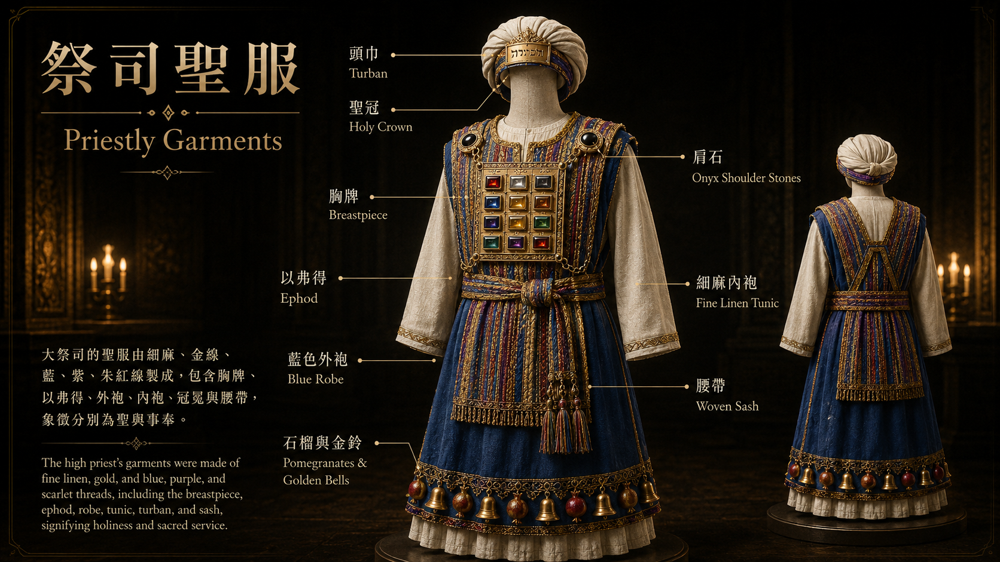

祭司聖服
The Priestly Garments · For Glory & for Beauty
互動圖典 · 祭司全身
Specimen · 滑鼠停留Hover any numbered hot-spot to reveal bilingual details and scripture references.
圖像參考 · Reference Plate
Plate VII
The Priestly Garments · 祭司聖服
經文 · Scripture
出埃及記 28:1–5, 31–43 (全 18 節)中文 · 和合本
1「你要從以色列人中，使你的哥哥亞倫和他的兒子拿答、亞比戶、以利亞撒、以他瑪一同就近你，給我供祭司的職分。 2你要給你哥哥亞倫做聖衣為榮耀，為華美。 3又要吩咐一切心中有智慧的，就是我用智慧的靈所充滿的，給亞倫做衣服，使他分別為聖，可以給我供祭司的職分。 4所要做的就是胸牌、以弗得、外袍、雜色的內袍、冠冕、腰帶，使你哥哥亞倫和他兒子穿這聖服，可以給我供祭司的職分。 5要用金線和藍色、紫色、朱紅色線，並細麻去做。」
（28:6–30 為以弗得與胸牌，另見其專屬頁面）
31「你要做以弗得的外袍，顏色全是藍的。 32袍上要為頭留一領口，口的周圍織出領邊來，彷彿鎧甲的領口，免得破裂。 33袍子周圍底邊上要用藍色、紫色、朱紅色線做石榴。在袍子周圍的石榴中間要有金鈴鐺： 34一個金鈴鐺一個石榴，一個金鈴鐺一個石榴，在袍子周圍的底邊上。 35亞倫供職的時候要穿這袍子。他進聖所到耶和華面前，以及出來的時候，袍上的響聲必被聽見，使他不至於死亡。
36你要用精金做一面牌，在上面按刻圖書之法刻著「歸耶和華為聖」。 37要用一條藍細帶子將牌繫在冠冕的前面。 38這牌必在亞倫的額上，亞倫要擔當干犯聖物條例的罪孽；這聖物是以色列人在一切的聖禮物上所分別為聖的。這牌要常在他的額上，使他們可以在耶和華面前蒙悅納。
39要用雜色細麻線織內袍，用細麻布做冠冕，又用繡花的手工做腰帶。 40你要為亞倫的兒子做內袍、腰帶、裹頭巾，為榮耀，為華美。 41要把這些給你的哥哥亞倫和他的兒子穿戴，又要膏他們，將他們分別為聖，好給我供祭司的職分。 42要給他們做細麻布褲子，遮掩下體；褲子當從腰達到大腿。 43亞倫和他兒子進入會幕，或就近壇，在聖所供職的時候必穿上，免得擔罪而死。這要為亞倫和他的後裔作永遠的定例。」
English · NIV
1"Have Aaron your brother brought to you from among the Israelites, along with his sons Nadab and Abihu, Eleazar and Ithamar, so they may serve me as priests. 2Make sacred garments for your brother Aaron to give him dignity and honor. 3Tell all the skilled workers to whom I have given wisdom in such matters that they are to make garments for Aaron, for his consecration, so he may serve me as priest. 4These are the garments they are to make: a breastpiece, an ephod, a robe, a woven tunic, a turban and a sash. They are to make these sacred garments for your brother Aaron and his sons, so they may serve me as priests. 5Have them use gold, and blue, purple and scarlet yarn, and fine linen."
(28:6–30 covers the ephod and breastpiece — see their dedicated pages.)
31"Make the robe of the ephod entirely of blue cloth, 32with an opening for the head in its center. There shall be a woven edge like a collar around this opening, so that it will not tear. 33Make pomegranates of blue, purple and scarlet yarn around the hem of the robe, with gold bells between them. 34The gold bells and the pomegranates are to alternate around the hem of the robe. 35Aaron must wear it when he ministers. The sound of the bells will be heard when he enters the Holy Place before the Lord and when he comes out, so that he will not die.
36Make a plate of pure gold and engrave on it as on a seal: holy to the Lord. 37Fasten a blue cord to it to attach it to the turban; it is to be on the front of the turban. 38It will be on Aaron's forehead, and he will bear the guilt involved in the sacred gifts the Israelites consecrate, whatever their gifts may be. It will be on Aaron's forehead continually so that they will be acceptable to the Lord.
39Weave the tunic of fine linen and make the turban of fine linen. The sash is to be the work of an embroiderer. 40Make tunics, sashes and caps for Aaron's sons to give them dignity and honor. 41After you put these clothes on your brother Aaron and his sons, anoint and ordain them. Consecrate them so they may serve me as priests. 42Make linen undergarments as a covering for the body, reaching from the waist to the thigh. 43Aaron and his sons must wear them whenever they enter the tent of meeting or approach the altar to minister in the Holy Place, so that they will not incur guilt and die. This is to be a lasting ordinance for Aaron and his descendants."